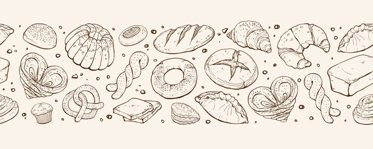

Our Story
My baking journey began when I was just 10 years old, standing beside my grandmother in her cozy kitchen during school holidays ... Oh how I loved visiting her in a small village called Kumakwane.
The recipes I cherish are time-tested treasures, handed down through my family...
Our Passion & Drive
At Artisan Bakery, our passion for baking is fueled by a desire to create joy and connection...
What We Offer
From delicate wedding cakes to imaginative specialty cakes and joyful birthday favorites...